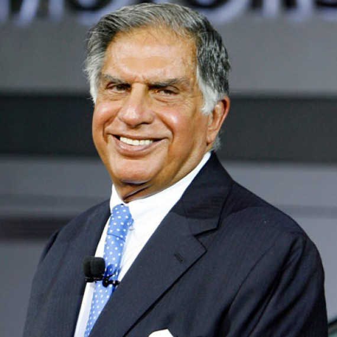
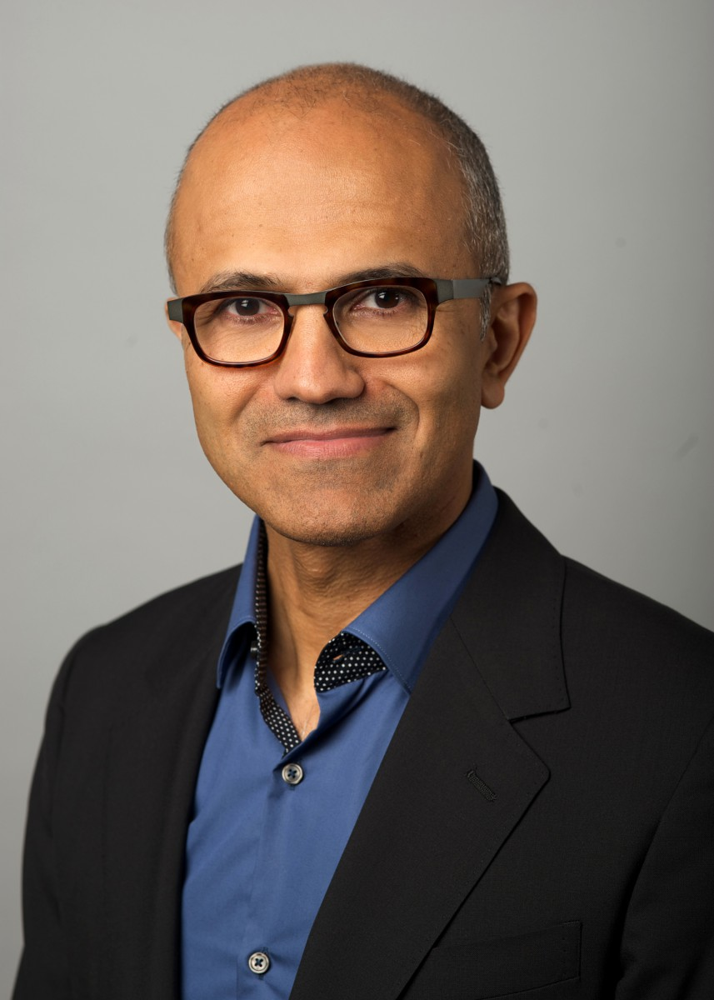
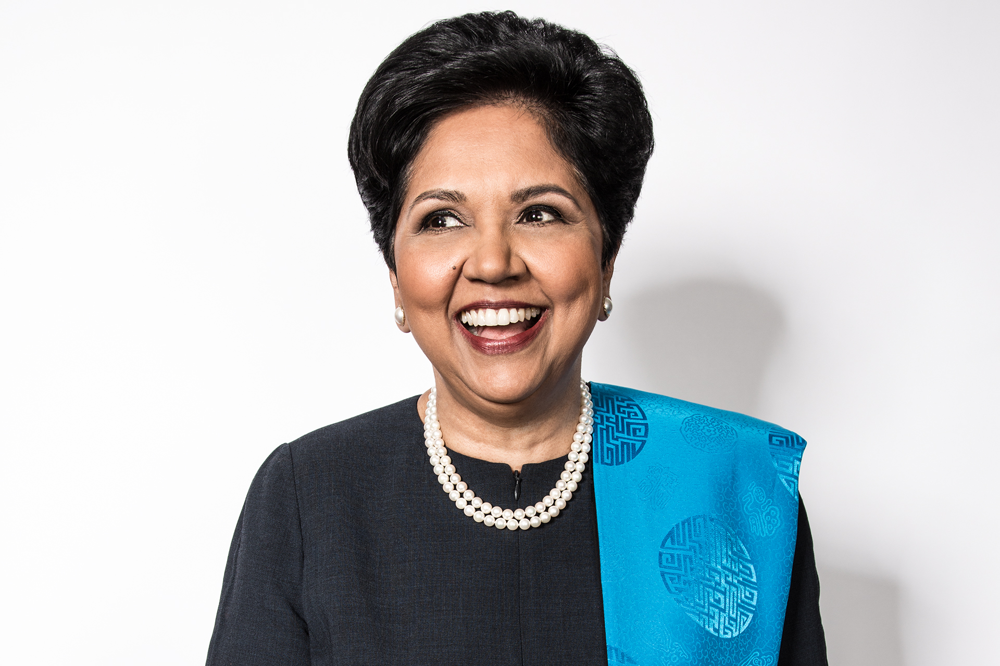

Govind Singh
Chairmen
He is one of those rare people who excelled in every part of life ,whichever part it is whether it is family or it is job or it is
building a strong foundation for society. He started his life in very scarce resources,born in a very average family,he done his starting
schooling from a primary school in a village,then move to jaipur for further studies.By facing many difficulties he successfully
completed his education by completing Masters in Arts(M.A),then after failures he successfully entered in public services ,started his
job services as S.I(Sub Inspector) in Rajasthan Police. He perform his job in a very efficient manner as should be performed,he always
showed a helping and supportive attitude towards everyone whoever he met,always supported right thing in life and shown the
society a right way of how life should be live by his attitude and behaviour.The manner in which he handled his personal and
professional life is outstanding.One can learn alot from him.He always showed generosity,humility and respect to everyone.Always
guided subordinates in a right manner.Always followed ethics and have not supported the wrong thing in life.Now also he is serving
society through his job and guiding subordinates,so that society does not go in wrong direction.

Sunder Pichai
Cheif Executive Officer(C.E.O)
Sundar Pichai, in full Pichai Sundararajan, (born July 12, 1972, Madras [now Chennai], Tamil Nadu, India), Indian-born American
computer scientist and executive who was CEO of both Google, Inc. (2015– ), and its holding company, Alphabet Inc. (2019– ).
As a boy growing up in Madras, Pichai slept with his brother in the
living room of the cramped family home, but his father, an electrical engineer at the British multinational GEC, saw that
the boys received a good education. At an early age Pichai displayed an interest in technology and an extraordinary memory,
especially for telephone numbers. After earning a degree in metallurgy (B.Tech., 1993) and a silver medal at the
Indian Institute of Technology Kharagpur, he was awarded a scholarship to study at Stanford University (M.S. in engineering
and materials science, 1995). He remained in the United States thereafter, working briefly for Applied Materials (a supplier
of semiconductor materials) and then earning an M.B.A. (2002) from the Wharton School of the University of Pennsylvania.

Ratan Tata
Managing Director(M.D)
Ratan Naval Tata (born 28 December 1937) is an Indian industrialist, philanthropist, and a former chairman of Tata Sons. He was also chairman of Tata Group,
from 1990 to 2012, and again, as interim chairman, from October 2016 through February 2017,
and continues to head its charitable trusts.[3][4] He is the recipient of two of the highest civilian awards of India,
the Padma Vibhushan (2008) and Padma Bhushan (2000).[5] He is well known for his business ethics and philanthropy.[6][7]
Born in 1937, he is a scion of the Tata family, and great-grandson of Jamsetji
Tata, the founder of Tata Group. He is an alumnus of the Cornell University College of Architecture. He joined his company i
n 1961 when he used to work on the shop floor of Tata Steel, and was the apparent successor to J. R. D. Tata upon the latter
's retirement in 1991. During Ratan Tata's chairmanship of 21 years, revenues grew over 40 times,
and profit, over 50 times.[8] He boldly got Tata Tea to acquire Tetley, Tata Motors to acquire Jaguar Land Rover,
and Tata Steel to acquire Corus, in an attempt to turn Tata from a largely India-centric group into a global business.

Satya Nadela
Cheif Technical Officer(C.T.O)
Satya Nadella, in full Satya Narayana Nadella, (born August 19, 1967, Hyderabad, India), Indian-born business executive who was CEO of the computer software company Microsoft (2014– ).
computer chip. computer. Hand holding computer chip. Central processing unit (CPU). history and society, science and technology, microchip, microprocessor motherboard computer Circuit Board
BRITANNICA QUIZ
Computers and Technology
What does the Internet prefix WWW stand for?
Nadella grew up in the southern Indian city of Hyderabad and studied electrical engineering at Mangalore University (B.Sc., 1988).
After moving to the United States,
he completed (1990) a master’s degree in computer science at the University of Wisconsin at Milwaukee and went to
work at Sun Microsystems, Inc., as a member of its technology staff. He was lured away from Sun in 1992 to join Microsoft,
where he initially worked on the development of Windows NT,
a landmark operating system that was aimed primarily at business users. While working full-time at Microsoft,
Nadella also earned (1997) a master’s degree in business administration from the University of Chicago.

Indra Nooyi
Operational Head(O.H.)
Indra Nooyi, (born October 28, 1955, Madras [now Chennai], India),
Indian-born American businesswoman who was instrumental in the lucrative restructuring and diversification of soft-drink
manufacturer PepsiCo, Inc.’s brands. Nooyi served as the company’s CEO (2006–18) and chairman of the board (2007–19).
asia bee map
BRITANNICA QUIZ
Get to Know Asia
On what river does China’s Three Gorges Dam lie?
Nooyi earned a bachelor’s degree in chemistry from Madras Christian College
in 1976 and a master’s degree in business administration from the Indian Institute of Management in Calcutta two years later.
After moving to the United States, she received an additional master’s degree in public and private
management from the Yale School of Management in 1980. For the next six years, Nooyi worked as a consultant for the Boston
Consulting Group. She later held executive positions at Motorola, Inc., and the engineering firm Asea Brown Boveri (now ABB).